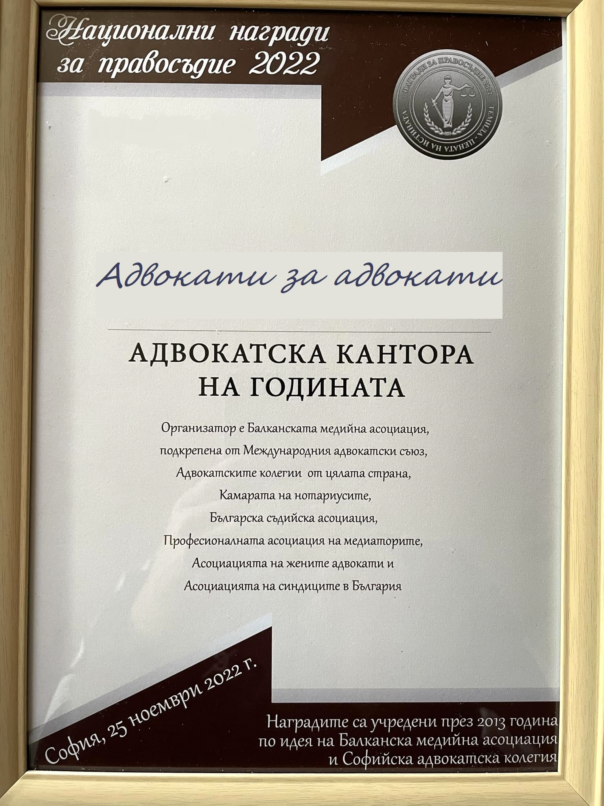

Награда „Млад юрист на годината“ 1993 г.

Награда „Кантора на годината“ 2022 г.
Адвокат Георги Делийски е възпитаник на юридическия факултет на Софийски унверситет „Св. Климент Охридски“. През 1990 г. се дипломира след успешно положени държавни изпити, пред нормативно определена комисия.
През 1991 г., след шест месечен стаж към Министерство на правосъдието, придобива юридическа правоспособност, полагайки предвидения в „Наредбата за единните държавни изисквания за придобиване на висше образование и квалификация „юрист“, изпит.
Адвокат Делийски преминава успешно изпит пред Висшия адвокатски съвет и се вписва в Софийска адвокатска колегия през 1992 г. По-късно същата година, се регистрира в Националния регистър за правна помощ към Национално бюро за правна помощ на Република България, като започва самостоятелна практика и отваря своята кантора в гр. София.
Адвокат Делийски притежава солидни теоретични познания, както и практически опит в областта на наказателното, търговското, гражданско, административно, вещно, трудово и застрахователното право, по които осъществява правна помощ и процесуално представителство на своите клиенти.
По време на своята практика работи с корпоративни клиенти, както и с физически лица във всички правни сфери. Негови клиенти са били членове на борда на директорите на големи акционерни дружества, както и множество чуждестранни инвеститори.
Адвокат Георги Делийски говори свободно английски и немски език, с което може да ви бъде полезен в консултации и правни услуги свързани с чуждестранни клиенти.
Награда „Млад юрист на годината“ 1993 г.
Награда „Кантора на годината“ 2022 г.